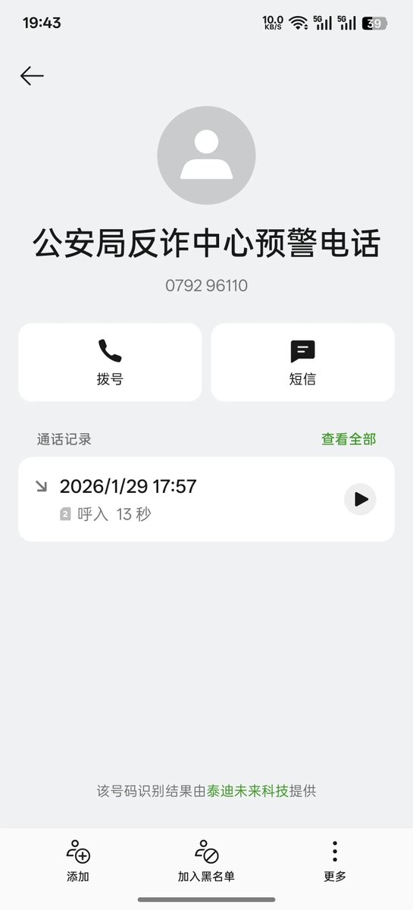
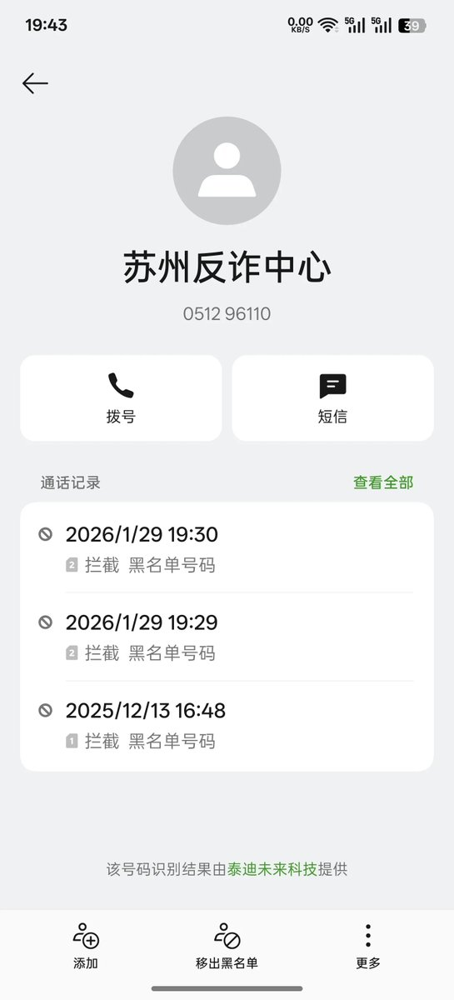

奶昔🥤
@realNyarime
就我上次发的那个rustdesk软件，前几天一直是电话提醒，没吊他，这次直接说要上门检查手机软件，这怎么搞，X还有TG软件要不要删😭😭😭


奶昔🥤
@realNyarime
之前一直用rustdesk控制电脑，今天需要用电脑控制手机，然后手机就打开了被控端，刚打开rustdesk被控端立马反诈提醒😅😅😅
我手机是一加13，开启这个被控端需要在应用设置里解除一个权限，解除后才能开启。
当我把这个权限一解除，反诈的电话和短信几分钟后就来了，真就是快如闪电
个人猜测一下流程： https://t.co/g5K4zl8cq8